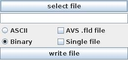

|
|
|
| input port | type | description | data acceptors |
|---|---|---|---|
| inField | VNField | ||
| output port | type | description | data schemas |
Write field
The module writes regular fields to a data file.
Input data
The input field is regular.
Parameters

Press select file button and select a file name for the output file in the file browser or type the file name into the text input field below the button.
In order to write data to the file press the write file button.
A radio button menu declares the file format as ASCII or Binary.
By default the file is in VisNow field format. If AVS .fld file check box is on the file is written in AVS field format.
If Single file is on header and data are written in one file. By default they are written separately.